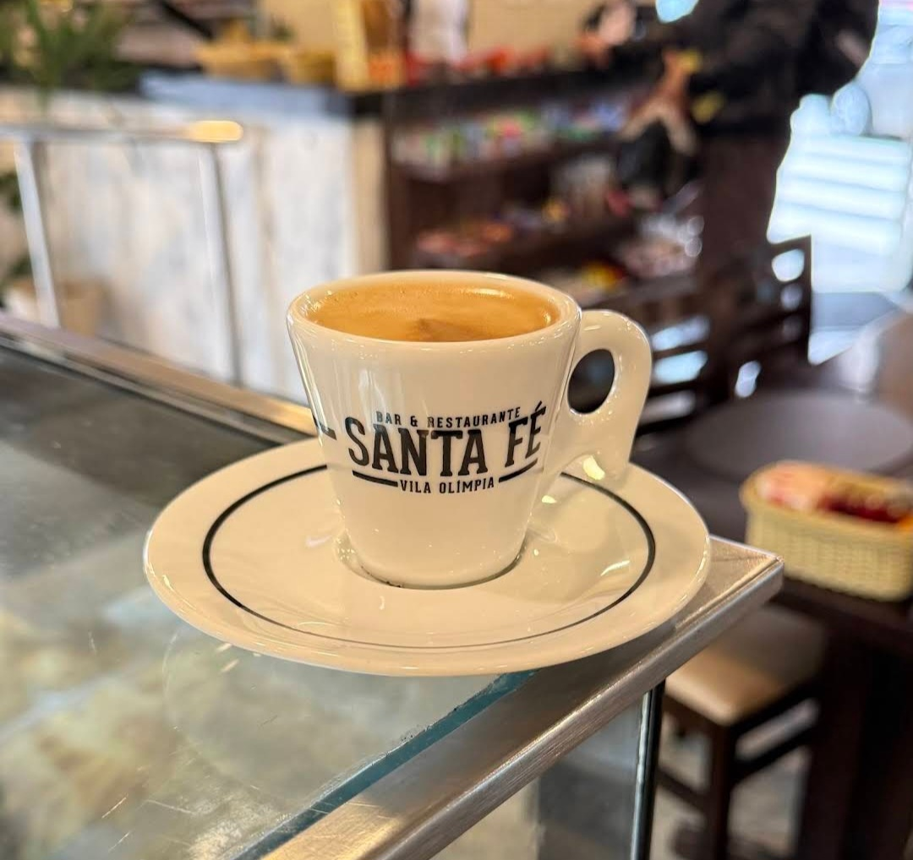
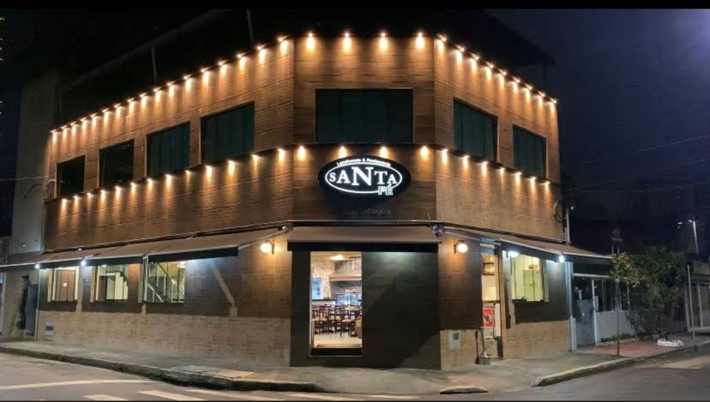

01 / COMEÇO BOM
Café & desjejum
Uma pausa acolhedora para começar o dia.
Do café da manhã ao almoço, descubra sabores preparados para transformar momentos simples em experiências especiais.
UM LUGAR PARA TODOS OS MOMENTOS
Uma pausa para aproveitar. Um café para começar bem o dia, uma refeição para compartilhar ou aquele encontro que merece um lugar especial.

Um ambiente acolhedor para encontrar pessoas, compartilhar uma refeição e aproveitar bons momentos.
R. Ramos Batista, 459
Vila Olímpia · São Paulo · SP
CEP 04552-020
Telefone: (11) 96242-8217
Ligar para o restaurante ↗